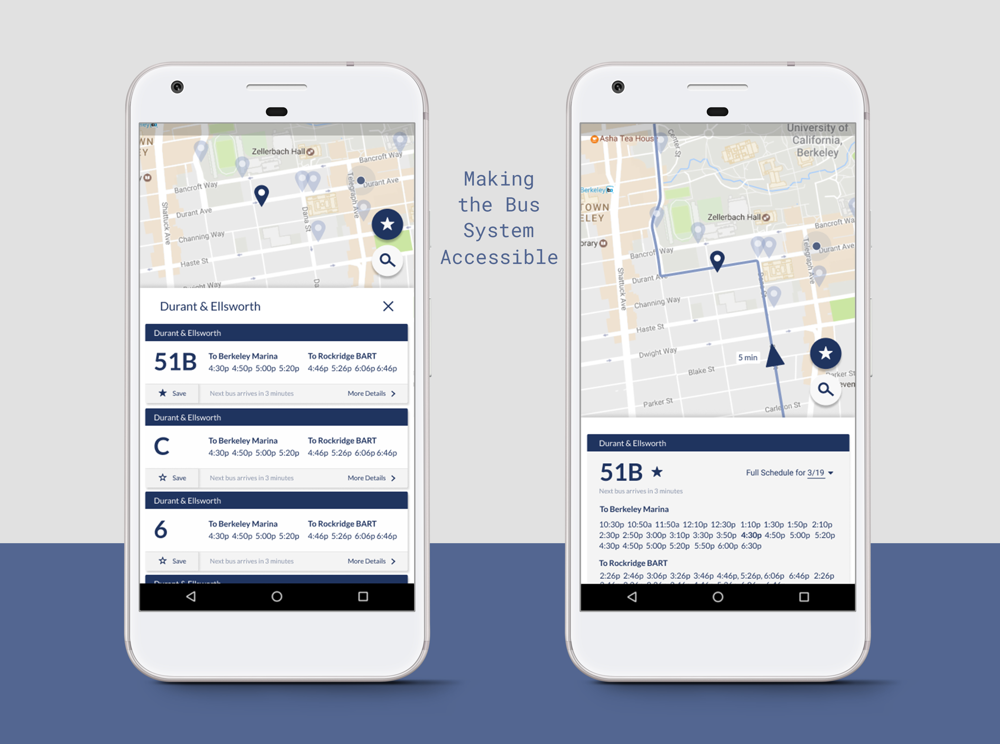
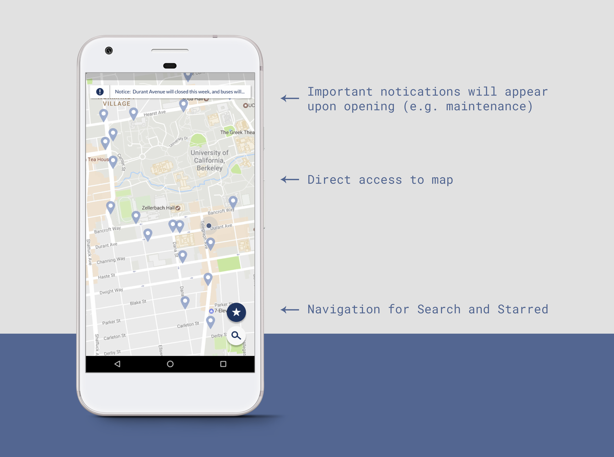
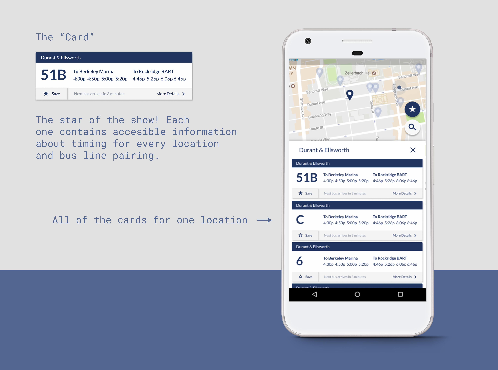
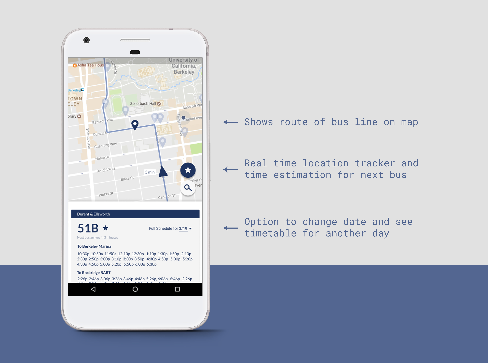
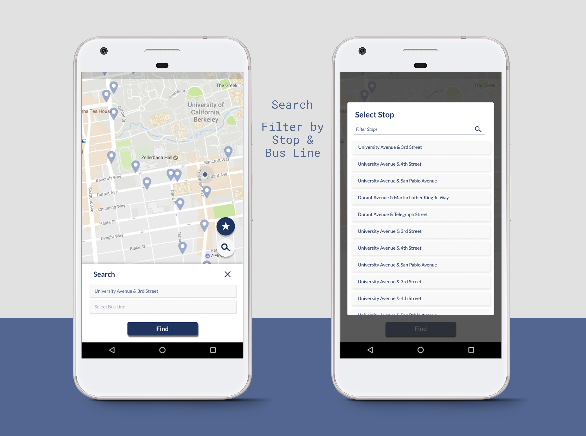
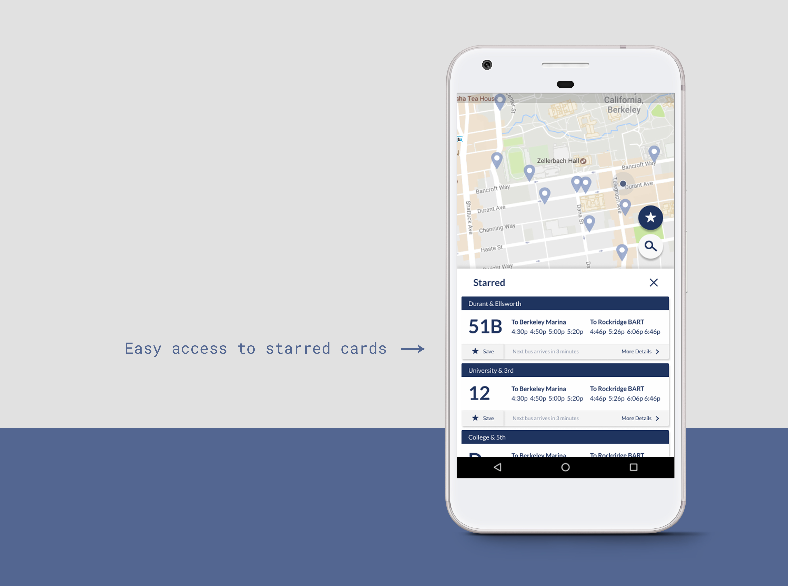

Berkeley is fortunate to have some pretty fantastic public transportation, covering a huge swath of the East Bay from Richmond to Berkeley, all the way into the South Bay. It’s an incredible public service, and one that unfortunately isn’t utilized as often as it should be — I can’t count the times that I’ve walked or ride shared somewhere, only to realize later that the bus would’ve taken me there, free of cost. So why weren’t more people making using of the public transportation at Berkeley?
The Problem
I spoke with several people about their interaction with the AC Transit system, if they had any at all. I primarily sought to identify the roadblocks users faced when trying to access the bus system, and how a design solution could encourage further engagement with AC Transit. My focus was on students — at UC Berkeley, students get free rides on the bus, removing monetary constraints and allowing me to expand the problem space.
A common trend that I found was that many students had used the bus system once or twice, before simply stopping altogether. They noted that while the bus system was convenient, it simply wasn’t reliable enough, and they weren’t able to keep track of what the times the bus was there. Ultimately, it wasn’t worth the hassle. This was understandable; a quick foray into the AC Transit website yielded intimidating, spreadsheet-esque timetables and frustration. The mobile options seemed equally limited; especially on Android, I saw these same spreadsheets, only... smaller. To fit on the mobile screens, I suppose.
What the users needed was a more efficient and reliable way to access information on the timing of bus stops and the location of bus stops. Only with this, I realized, could people begin to build trust in the bus system. I decided that the best solution would be to design a mobile app, as a way to deliver information straight to a user’s phone — convenient, especially on the go.
The Process
I began with wireframes, on paper. Timeless. I quickly filled up a couple pages, mostly focused on the interaction between map and navigation; I wanted the flow between the two parts to be seamless and without friction. I then headed to my prototyping tool of choice, Figma (equivalent to Sketch), pretty quickly, running through potential designs and duplicating freely to create new branches, as I iterated on new features and designs.
The Solution
What I ultimately hoped to achieve was a mobile app that could not only encourage the exploration of the bus system, but also provide reliable and easily parsable information on bus times and locations, especially for regular users of the system who depended primarily on only one or two bus lines. In order to achieve this, I chose to make the application open to the map, complete with pointers for bus stations and the current location of the user. To me, transportation of any kind is first and foremost a visual and pictorial experience, which is why I wanted to put the map front and center, allowing people to quickly find nearby bus stops based on their location. App navigation, I hoped, would be peripheral, and complementary to interaction with the main map.
Opening Screen
The starting screen is simply a map, front and center. In reality, there are 4 ways to interact with the map — by entering a location pin, choosing one of the two buttons on the bottom right, or interacting with any notifications on the top that may exist. The options are clear, and as much room is given to the visual map as possible. The opening screen is intended to be reminiscent of Google Maps, in an effort to provide a familiar space.
Location Pins and Cards
Upon clicking any of the location pins, the user will be taken to a pop up tab from the bottom, which will detail all of the bus lines that run through that location, as well as glanceable information for those in a hurry. Each bus line under the location tab is given a "card", which will appear as a design element throughout the application (e.g. the Starred section). The card is meant to be a modular, stand alone component, meant to show information at a glance; as shown, the card includes all the information that it needs to stand alone (e.g. bus line and stop), but also serves as a button, allowing users to star the card or to press it for more detail.
More Details
By pressing into a card, the user and choosen to view the complete information for a specific bus line and stop combination, and thus the full timetable can be accessed. The date can also be changed, so any day's timetable can be viewed. Additionally, more information will show regarding the location of the bus, including real time tracking and the route that it is taking. This is because buses are often late; a real time tracker is intended to increase transparency in the process by providing the most accurate information, building trust with the user and holding the bus system accountable for buses that are behind their schedule.
Search
From the opening screen, a search button can be accessed to quickly find a card based on a specific bus line and stop.
Starred
This feature is meant to give easy access to regularly used bus lines, immediately pulling up starred bus cards so that a regular user can quickly glance at upcoming times. Furthermore, more information can be accessed by pressing any of the cards.
Reflections
I thought that this was an interesting and valuable project; I struggled at times with displaying all of the information that was required, and this had an effect on the UI of the application. If I were to do it again, I would start with these visualizations in mind — how to format a large list of times and dates, and how to have repeating elements that are flexible (i.e. the "cards" I created) while still maintaining visual consistency.
Thanks for viewing!